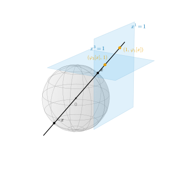
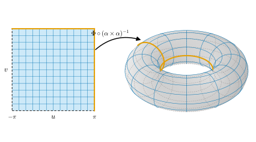

11.4 More Examples
Goals
- \(\RP^n\)의 transition map \(\varphi_j \circ \varphi_i^{-1}\)을 계산하여 \(\RP^n\)에 smooth structure를 줄 수 있다.
- open submanifold, finite-dimensional vector space, \(\GL(n, \R)\), 그래프의 smooth structure를 만들 수 있다.
- product manifold를 정의하고 torus \(T^n\)의 chart(각 chart)를 쓸 수 있으며, 곱 atlas가 곱 구조 전체가 아님을 설명할 수 있다.
Prerequisites
- Proposition 11.1.5 (open subset과 곱), Example 11.1.7 (\(\RP^n\)), Example 11.1.8 (그래프)
- Proposition 11.2.10, Proposition 11.2.14 (smooth chart의 제한과 조정)
- Definition 11.3.2 (\(S^n\)의 표준 구조), Example 11.3.7 (\(S^1\)의 각 chart)
- Proposition 3.4.15 (\(\RP^n\)의 coordinate neighborhood), Example 3.2.8(c) (\(\GL(n, \R)\)은 열려 있다)
- Proposition 1.2.12 (coordinate map), Theorem 1.4.5 (벡터 성분의 변환)
Motivation
Section 11.3에서 \(S^n\)의 transition map을 직접 계산해 smooth structure를 주었다. smooth manifold를 얻는 방법은 크게 두 가지다. 하나는 \(S^n\)처럼 chart를 구체적으로 쓰고 transition map을 계산하는 것이고, 다른 하나는 이미 아는 manifold에서 일반적인 구성으로 새 manifold를 만드는 것이다. 이 절은 첫째 방법의 또 다른 running example인 \(\RP^n\)으로 시작한다. Chapter 3에서 \(\RP^n\)의 chart가 homeomorphism임을 보였으므로(Proposition 3.4.15) 남은 일은 transition map의 smoothness뿐이다. 이어서 둘째 방법의 기본 도구인 open subset, vector space, 그래프, 곱을 차례로 다룬다. 이 도구들은 계산 없이, 또는 아주 짧은 계산만으로 smooth structure를 준다.

Real Projective Space \(\RP^n\)
Proposition 3.4.15와 그 증명의 기호를 상기하자. \(X = \R^{n+1} \setminus \{0\}\), \(\pi\colon X \to \RP^n\)은 projection이고, \(i = 1, \dots, n+1\)에 대해
로 두자(\(h_i\)는 \(x^i \ne 0\)인 곳에서 정의된다). 그러면 \(\varphi_i \circ \pi = h_i\) (\(\{x^i \ne 0\}\) 위에서)이고 \(\varphi_i^{-1} = \pi \circ j_i\)이다. 즉 \(j_i(u)\)는 점 \(\varphi_i^{-1}(u)\)의 대표 가운데 \(i\)번째 성분이 \(1\)인 것이다.
Proposition 11.4.1 (\(\RP^n\)의 smooth atlas). \(n \ge 1\)이면 \(\{(U_i, \varphi_i)\}_{i=1}^{n+1}\)은 \(\RP^n\)의 smooth atlas다. \(i \ne j\)이면
이다. 여기서 \(j_i(u)^j\)는 \(j \lt i\)이면 \(u^j\), \(j \gt i\)이면 \(u^{j-1}\)이다. 이 atlas가 정하는 구조를 \(\RP^n\)의 표준 smooth structure라 한다.
Proof idea: \(\varphi_i^{-1}(u)\)의 대표 \(j_i(u)\)를 골라 \(\varphi_j\)의 식에 넣는다. 결과는 성분의 나눗셈이다.
Proof. \(\RP^n\)은 topological \(n\)-manifold이고 \((U_i, \varphi_i)\)는 chart이며 \(U_i\)들이 \(\RP^n\)을 덮는다(Example 11.1.7). \(i \ne j\)라 하자. \(u \in \R^n\)이면 \(\varphi_i^{-1}(u) = [j_i(u)]\)이고, \([x] \in U_j\)는 대표의 \(j\)번째 성분이 \(0\)이 아니라는 뜻이다. \(j_i(u)\)의 \(j\)번째 성분은 \(j \lt i\)이면 \(u^j\), \(j \gt i\)이면 \(u^{j-1}\)이다 (\(i\)번째 자리에 \(1\)이 끼어 있어 그 뒤의 첨자가 하나씩 밀린다). 따라서 \(\varphi_i(U_i \cap U_j)\)는 (11.4.2)의 첫 식이고, 연속함수 \(u \mapsto u^j\) 또는 \(u^{j-1}\)에 의한 \(\R \setminus \{0\}\)의 preimage이므로 열려 있다. 이 집합 위에서 \(\varphi_j(\varphi_i^{-1}(u)) = \varphi_j(\pi(j_i(u))) = h_j(j_i(u))\)이다. \(j_i\)는 성분이 일차식이므로 매끄럽고, \(h_j\)는 성분이 분모가 \(0\)이 아닌 유리함수이므로 \(\{x^j \ne 0\}\)에서 매끄럽다. Proposition 2.2.12에 의해 \(\varphi_j \circ \varphi_i^{-1}\)은 매끄럽다. \(i\)와 \(j\)를 바꾸면 inverse map \(\varphi_i \circ \varphi_j^{-1}\)도 매끄럽다. 따라서 모든 transition map이 diffeomorphism이다.
Verification: verify/v-11-4-more-examples.py (\(n = 1, 2, 3\)의 모든 \(i \ne j\))
Example 11.4.2 (\(\RP^1\)과 \(\RP^2\)의 transition map). (a) \(n = 1\)이면 \(j_1(u) = (1, u)\)이고 \(\varphi_2 \circ \varphi_1^{-1}(u) = h_2(1, u) = 1/u\) (\(u \ne 0\))이다. 이것이 Example 3.4.16의 \(\varphi_2 = 1/\varphi_1\)이다.
(b) \(n = 2\)이면 \(j_1(u) = (1, u^1, u^2)\), \(j_2(u) = (u^1, 1, u^2)\), \(j_3(u) = (u^1, u^2, 1)\)이다. \(h_2(x) = (x^1/x^2,\ x^3/x^2)\), \(h_3(x) = (x^1/x^3,\ x^2/x^3)\)에 넣으면
이다. 정의역은 차례로 \(\{u^1 \ne 0\}\), \(\{u^2 \ne 0\}\), \(\{u^2 \ne 0\}\)이다. 예를 들어 첫 식에서 \([1 : u^1 : u^2]\)의 대표를 둘째 성분으로 나누어 \([1/u^1 : 1 : u^2/u^1]\)로 쓰고, 둘째 성분(\(1\))을 뺀 것이다. 첫 식을 두 번 합성하면 \(\big(1/(1/u^1),\ (u^2/u^1)/(1/u^1)\big) = (u^1, u^2)\)이므로 \(\varphi_2 \circ \varphi_1^{-1}\)은 자기 자신이 역이다. 실제로 \(\varphi_1 \circ \varphi_2^{-1}(v) = h_1(v^1, 1, v^2) = (1/v^1,\ v^2/v^1)\)으로 같은 식이다.
Verification: verify/v-11-4-more-examples.py
Open Submanifolds
topological manifold의 open subset은 같은 dimension의 topological manifold였다(Proposition 11.1.5(a)). smooth structure도 그대로 물려받는다. chart를 open subset 안으로 줄이면 되기 때문이다.
Proposition 11.4.3 (open subset의 smooth structure). \((M, \mathcal{A})\)가 smooth \(n\)-manifold이고 \(W \subseteq M\)이 open set이라 하자. 정의역이 \(W\)에 들어가는 smooth chart들의 모임
는 topological \(n\)-manifold \(W\)의 smooth structure다.
Proof. \(W\)는 topological \(n\)-manifold다(Proposition 11.1.5(a)). \(U \subseteq W\)가 \(M\)에서 열려 있으면 \(W\)에서도 열려 있으므로 \(\mathcal{A}|_W\)의 원소는 \(W\)의 chart다. atlas. \(p \in W\)이면 \(p\) 둘레의 \((U, \varphi) \in \mathcal{A}\)가 있고, Proposition 11.2.14(a)에 의해 \((U \cap W, \varphi|_{U \cap W}) \in \mathcal{A}\)이며 정의역이 \(W\)에 들어간다. smooth atlas. smooth atlas \(\mathcal{A}\)의 부분모임이므로 두 chart는 compatible이다. 극대. \(W\)의 chart \((V, \psi)\)가 \(\mathcal{A}|_W\)의 모든 chart와 compatible이라고 하자. \(V\)는 \(W\)에서 열려 있고 \(W\)가 \(M\)에서 열려 있으므로 \(V\)는 \(M\)에서 열려 있고, \((V, \psi)\)는 \(M\)의 chart다. \((U, \varphi) \in \mathcal{A}\)가 임의의 smooth chart이면 \((U \cap W, \varphi|_{U \cap W}) \in \mathcal{A}|_W\)이고, \(U \cap V = (U \cap W) \cap V\)이므로 \(\psi\)와 \(\varphi\)의 transition map은 \(\psi\)와 \(\varphi|_{U \cap W}\)의 transition map과 같다. 따라서 \((V, \psi)\)는 \(\mathcal{A}\)의 모든 chart와 compatible이고, \(\mathcal{A}\)가 극대이므로 \((V, \psi) \in \mathcal{A}\)이다. \(V \subseteq W\)이므로 \((V, \psi) \in \mathcal{A}|_W\)이다.
Definition 11.4.4 (open submanifold). smooth manifold \(M\)의 open set \(W\)에 Proposition 11.4.3의 smooth structure \(\mathcal{A}|_W\)를 준 것을 \(M\)의 open submanifold(열린부분다양체)라 한다.
Example 11.4.5 (open submanifold). (a) \(\R^n\)의 open set \(W\)는 표준 구조의 open submanifold다. 그 smooth chart는 \(W\) 안의 open set에서 \(\R^n\)의 open set으로 가는 diffeomorphism이다(Example 11.2.11). 이 구조는 chart 하나 \((W, \id_W)\)가 정한다.
(b) \(\R^n \setminus \{0\}\), \(\R^2\)에서 원점과 음의 \(x\)축을 뺀 \(\Omega\)(polar coordinates chart의 정의역), \(S^n \setminus \{N\}\)은 open submanifold다. \(S^n \setminus \{N\}\)은 chart 하나 \(\sigma\)로 덮인다.
(c) \(\RP^n\)의 \(U_i\)는 open submanifold이고 chart 하나 \(\varphi_i\)로 덮인다. Chapter 12의 말로는 \(U_i\)와 \(\R^n\)이 diffeomorphic이다.
Non-example 11.4.6 (open subset이 아닌 경우). (a) \(S^1\)은 \(\R^2\)의 open submanifold가 아니다. \((1, 0)\)을 중심으로 하는 모든 ball은 \(S^1\) 밖의 점 \((1 + \varepsilon/2, 0)\)을 포함하므로 \(S^1\)은 \(\R^2\)의 open set이 아니다. dimension도 다르다. \(S^1\)의 smooth structure는 Section 11.3에서 따로 주었고, 그것이 \(\R^2\)의 구조와 어떻게 맞물리는지는 Chapter 14의 embedding submanifold가 답한다.
(b) \([0, 1)\)은 \(\R\)의 open set이 아니므로(\(0\)의 어떤 구간도 음수를 포함한다) Proposition 11.4.3을 쓸 수 없다. 실제로 \([0, 1)\)은 (경계가 없는) topological manifold도 아니다(Non-example 11.5.3(a)). 이런 공간은 Section 11.5에서 다룬다.
Vector Spaces and Matrix Spaces
Example 11.4.7 (finite-dimensional vector space). \(V\)가 \(n\)-dimensional real vector space라 하자. basis \(\mathcal{B}\)를 고르면 coordinate map \(v \mapsto [v]_{\mathcal{B}}\)는 \(V\)에서 \(\R^n\)으로 가는 linear isomorphism이다(Proposition 1.2.12(b)).
- topology. \(O \subseteq V\)가 열려 있다는 것을 \([O]_{\mathcal{B}}\)가 \(\R^n\)에서 열려 있다는 것으로 정한다. 이것은 basis에 무관하다. 다른 basis \(\tilde{\mathcal{B}}\)로의 change-of-basis matrix를 \(B\)라 하면 \([v]_{\tilde{\mathcal{B}}} = B^{-1}[v]_{\mathcal{B}}\)이고(Theorem 1.4.5), invertible linear map \(y \mapsto B^{-1}y\)는 inverse map도 linear이므로 \(\R^n\)의 homeomorphism이기 때문이다(Example 3.2.6(b)). 이 topology에서 \([\cdot]_{\mathcal{B}}\)는 homeomorphism이므로 \(V\)는 topological \(n\)-manifold다.
- smooth structure. 모든 basis에 대한 chart \((V, [\cdot]_{\mathcal{B}})\)의 모임은 smooth atlas다. 두 chart의 transition map \([\cdot]_{\tilde{\mathcal{B}}} \circ [\cdot]_{\mathcal{B}}^{-1}(y) = B^{-1}y\)가 linear이고, 역 \(y \mapsto By\)도 linear이기 때문이다. 이 atlas가 정하는 구조를 \(V\)의 표준 smooth structure라 한다. 한 basis의 chart 하나만으로도 같은 구조가 정해진다(Proposition 11.2.10(b)).
특히 \(m \times n\) real matrix 전체 \(M(m \times n, \R)\)는 성분 \(A^i_j\)를 좌표로 하는 \(mn\)-dimensional smooth manifold다. \(n \times n\) 행렬 전체는 \(M(n, \R)\)로 쓴다.
Verification: verify/v-11-4-more-examples.py
Example 11.4.8 (general linear group \(\GL(n, \R)\)). invertible matrix 전체 \(\GL(n, \R) = \{A \in M(n, \R) : \det A \ne 0\}\)은 \(M(n, \R)\)(성분을 좌표로 \(\R^{n^2}\)과 같이 본다)의 open set이다. \(\det\)가 성분의 다항식이어서 연속이기 때문이다(Example 3.2.8(c)). 따라서 \(\GL(n, \R)\)은 \(M(n, \R)\)의 open submanifold이고 dimension은 \(n^2\)이다. 예를 들어 \(\GL(1, \R) = \R \setminus \{0\}\)이다. \(\GL(n, \R)\)은 연결이 아니다(Example 3.7.10(e)). \(\{\det \gt 0\}\)과 \(\{\det \lt 0\}\)은 각각 open submanifold다(Exercise 11.4.3).
Graphs
Example 11.4.9 (그래프의 smooth structure). \(U \subseteq \R^n\)이 open set이고 \(f\colon U \to \R^k\)가 연속이라 하자. 그래프 \(\Gamma(f) \subseteq \R^{n+k}\)는 topological \(n\)-manifold이고 chart 하나 \((\Gamma(f), \pi)\)로 덮인다(Example 11.1.8). chart 하나로 된 atlas는 매끄러우므로(Example 11.2.6(a)) \(\{(\Gamma(f), \pi)\}\)는 \(\Gamma(f)\)에 smooth structure를 준다. 이것을 그래프의 표준 구조라 하자. Example 11.3.4의 hemisphere \(U_{n+1}^+\)는 \(f(w) = \sqrt{1 - \abs{w}^2}\)의 그래프이고, 그 chart가 hemisphere charts \(\varphi_{n+1}^+\)다.
Product Manifolds
두 topological manifold의 곱은 topological manifold였고, 그 증명에서 chart의 곱 \(\varphi \times \psi\)가 product space의 chart였다(Proposition 11.1.5(b)). 이 곱 chart들의 transition map도 곱의 꼴이므로 매끄럽다.
Proposition 11.4.10 (곱 atlas). \((M, \mathcal{A}_M)\)이 smooth \(m\)-manifold이고 \((N, \mathcal{A}_N)\)이 smooth \(n\)-manifold라 하자. 곱 chart들의 모임
는 topological \((m + n)\)-manifold \(M \times N\)의 smooth atlas다.
Proof. Proposition 11.1.5(b)의 증명에서 \(\varphi \times \psi\)는 chart이고, \(U\)와 \(V\)가 각각 \(M\)과 \(N\)을 덮으므로 \(U \times V\)들이 \(M \times N\)을 덮는다. 두 곱 chart \((U \times V, \varphi \times \psi)\), \((U' \times V', \varphi' \times \psi')\)를 보자. \((U \times V) \cap (U' \times V') = (U \cap U') \times (V \cap V')\)이고, 그 image는 \(\varphi(U \cap U') \times \psi(V \cap V')\)이다. 그 위에서
이다. 앞의 \(m\)개 성분은 smooth map \(\varphi' \circ \varphi^{-1}\)과 linear map \((x, y) \mapsto x\)의 합성이고, 뒤의 \(n\)개 성분도 마찬가지다. 성분이 모두 매끄러우므로 (11.4.6)은 매끄럽다(Proposition 2.2.12(b)). inverse map은 같은 꼴 \((\varphi \circ \varphi'^{-1}) \times (\psi \circ \psi'^{-1})\)이므로 역시 매끄럽다.
Definition 11.4.11 (product manifold). Proposition 11.4.10의 atlas \(\mathcal{A}_M \times \mathcal{A}_N\)이 정하는 smooth structure를 곱 구조라 하고, 곱 구조를 준 \(M \times N\)을 product manifold(곱다양체)라 한다. 유한개의 곱 \(M_1 \times \dots \times M_k\)도 같은 방식으로 정의한다.
Example 11.4.12 (torus \(T^n\)과 그 각 chart). \(T^n = S^1 \times \dots \times S^1\)에 \(S^1\)의 표준 구조(Definition 11.3.2)들의 곱 구조를 준다. 이것이 이 study set의 \(n\)-dimensional torus다. \(T^2 = S^1 \times S^1\)을 자세히 보자.
- stereographic projection의 곱. \(\sigma \times \sigma\), \(\sigma \times \tilde\sigma\), \(\tilde\sigma \times \sigma\), \(\tilde\sigma \times \tilde\sigma\)는 \(T^2\)를 덮는 곱 chart 네 개다. transition map은 (11.4.6)에 의해 성분마다 \(u \mapsto 1/u\)이거나 identity map이다.
- 각 chart. \(S^1\)의 각 chart \(\alpha\)는 표준 구조에 속하므로(Example 11.3.7) \(\alpha \times \alpha\)는 곱 구조의 chart다(정의에서 \(\mathcal{A}_M\)과 \(\mathcal{A}_N\)은 극대 atlas다). 그 inverse map은 \((\alpha \times \alpha)^{-1}(u, v) = \big((\cos u, \sin u),\ (\cos v, \sin v)\big)\), \((u, v) \in (-\pi, \pi)^2\)이다.
- torus of revolution과의 관계. torus \(T^2\)에서 \(\R^3\)의 torus of revolution \(T_{R,r}\)로 가는 Example 3.3.17의 homeomorphism \(\Phi\colon T^2 \to T_{R,r}\)와 합성하면 \(\Phi \circ (\alpha \times \alpha)^{-1}(u, v) = \mathbf{x}(u, v)\)이다. 이것이 torus of revolution의 standard parametrization \(\mathbf{x}(u, v) = \big((R + r\cos u)\cos v,\ (R + r\cos u)\sin v,\ r\sin u\big)\)이다(Figure 11.4.2). 즉 standard parametrization의 매개변수 \((u, v)\)는 \(T^2\)의 각 chart의 좌표다.
각 chart는 두 원 \(\{u = \pi\}\), \(\{v = \pi\}\)를 덮지 못한다. 각 성분에서 \(\alpha\) 대신 Exercise 11.3.5의 \(\beta\)도 쓰면, 곱 chart 네 개 \(\alpha \times \alpha\), \(\alpha \times \beta\), \(\beta \times \alpha\), \(\beta \times \beta\)가 \(T^2\)를 덮는다. 같은 방법으로 cylinder \(S^1 \times \R\), \(S^m \times S^n\), \(\R^m \times \R^n\)도 product manifold다.
Verification: verify/v-11-4-more-examples.py (\(\Phi \circ (\alpha \times \alpha)^{-1} = \mathbf{x}\)는 dgsym.EXAMPLES["torus"]로 확인)

Non-example 11.4.13 (곱 atlas는 극대가 아니다). \(\R \times \R\)에서 곱 atlas \(\mathcal{A}_\R \times \mathcal{A}_\R\)은 곱 구조 전체가 아니다. polar coordinates chart \((\Omega, \vartheta)\)(Example 11.2.12)의 정의역 \(\Omega = \R^2 \setminus \{(x, 0) : x \le 0\}\)은 곱 \(U \times V\)의 꼴이 아니다. 만약 \(\Omega = U \times V\)이면 \((1, 0) \in \Omega\)에서 \(0 \in V\)이고, \((-1, 1) \in \Omega\)에서 \(-1 \in U\)이므로 \((-1, 0) \in U \times V = \Omega\)가 되어 모순이다. 따라서 \((\Omega, \vartheta) \notin \mathcal{A}_\R \times \mathcal{A}_\R\)이다.
그러나 polar coordinates chart는 곱 구조에 속한다. \((\R^2, \id) = (\R \times \R, \id \times \id)\)가 곱 atlas에 들어 있으므로, Proposition 11.2.10(b)의 유일성에 의해 곱 구조는 \(\R^2\)의 표준 구조와 같고, polar coordinates chart는 표준 구조에 속하기 때문이다. 일반적으로 \(\R^m \times \R^n\)의 곱 구조는 \(\R^{m+n}\)의 표준 구조다. 곱 atlas는 곱 구조를 정하는 atlas일 뿐, 곱 구조의 모든 chart를 담고 있지는 않다.
Summary
- \(\RP^n\)의 transition map은 \(\varphi_j \circ \varphi_i^{-1} = h_j \circ j_i\), 즉 대표 \((\dots, 1, \dots)\)의 성분을 한 성분으로 나누는 유리함수다. \(\{(U_i, \varphi_i)\}\)는 smooth atlas이고 \(\RP^n\)의 표준 구조를 정한다.
- smooth manifold의 open set은 chart를 줄여 얻는 구조로 open submanifold가 된다. \(\R^n\)의 open set, \(\GL(n, \R) \subseteq M(n, \R)\)(dimension \(n^2\))이 그 예다.
- \(n\)-dimensional vector space는 basis chart들로 표준 구조를 가지며, transition map은 change-of-basis matrix의 inverse matrix다.
- 연속함수의 그래프는 chart 하나로 smooth manifold가 된다. 그러나 이것은 \(\R^{n+k}\) 안의 smoothness와는 별개의 문제다(Chapter 14).
- 곱 chart의 transition map은 성분별 transition map의 곱이다. torus \(T^2 = S^1 \times S^1\)의 각 chart 좌표가 torus of revolution standard parametrization의 \((u, v)\)다. 곱 atlas는 곱 구조를 정하지만 극대는 아니다.
다음 절에서는 지금까지 제외했던 공간, 예를 들어 닫힌 구간 \([0, 1]\)이나 닫힌 disk를 다룬다. 이 공간들의 가장자리 점은 \(\R^n\)의 open set과 같은 neighborhood를 갖지 못한다. 모형을 closed upper half-space \(\mathbb{H}^n\)으로 바꾸어 경계를 갖는 manifold를 정의하고, 경계가 잘 정의됨을 보인다.
Exercises
Exercise 11.4.1 ★ \(\RP^2\)에서 \(\varphi_1 \circ \varphi_3^{-1}\)의 정의역과 식을 구하고, Figure 11.4.1의 값 \(\varphi_3[x] = (2/3, 5/9)\)을 넣어 \(\varphi_1[x] = (5/6, 3/2)\)을 확인하여라.
Solution
\(j_3(u) = (u^1, u^2, 1)\)이고 \(U_1\)의 조건은 첫째 성분 \(u^1 \ne 0\)이다. 정의역은 \(\{u^1 \ne 0\}\)이고 \(\varphi_1 \circ \varphi_3^{-1}(u) = h_1(u^1, u^2, 1) = (u^2/u^1,\ 1/u^1)\)이다. \(u = (2/3, 5/9)\)이면 \(\big((5/9)/(2/3),\ 1/(2/3)\big) = (5/6, 3/2)\)이다. 직접 계산해도 \(x = (0.6, 0.5, 0.9)\)에서 \(\varphi_1[x] = (0.5/0.6,\ 0.9/0.6) = (5/6, 3/2)\)이다.
Verification: verify/v-11-4-more-examples.py
Exercise 11.4.2 ★ cylinder \(S^1 \times \R\)의 곱 구조에서 두 chart \(\sigma \times \id\), \(\tilde\sigma \times \id\)가 atlas를 이룸을 보이고 transition map을 구하여라.
Solution
정의역 \((S^1 \setminus \{N\}) \times \R\)과 \((S^1 \setminus \{S\}) \times \R\)의 합집합은 \(S^1 \times \R\)이다. 두 chart는 곱 atlas의 원소이므로(\(\id \in \mathcal{A}_\R\)) 곱 구조의 chart다. 겹치는 곳의 image는 \((\R \setminus \{0\}) \times \R\)이고, (11.4.6)과 Proposition 11.3.1에 의해 transition map은 \((u, t) \mapsto (1/u,\ t)\)이다. 이것은 자기 자신이 역인 diffeomorphism이다.
Exercise 11.4.3 ★ \(\GL^+(n, \R) = \{A \in M(n, \R) : \det A \gt 0\}\)이 \(M(n, \R)\)의 open submanifold임을 보이고 dimension을 구하여라.
Solution
\(\det\colon M(n, \R) \to \R\)는 연속이므로(Example 3.2.8(c)) \(\GL^+(n, \R) = \det^{-1}((0, \infty))\)은 open set이다. Proposition 11.4.3에 의해 open submanifold이고, dimension은 \(M(n, \R)\)과 같은 \(n^2\)이다. (\(\GL^+(n, \R)\)은 \(\GL(n, \R)\)의 open submanifold이기도 하다.)
Exercise 11.4.4 ★ 참인지 거짓인지 판별하고 이유를 써라. (a) 곱 atlas \(\mathcal{A}_M \times \mathcal{A}_N\)은 maximal atlas다. (b) smooth manifold의 공집합이 아닌 open set은 같은 dimension의 smooth manifold다. (c) \(\RP^n\)의 homogeneous coordinates \(x^1\)은 \(\RP^n\) 위의 함수다.
Solution
(a) 거짓. Non-example 11.4.13의 polar coordinates chart. (b) 참. Proposition 11.4.3. (c) 거짓. \([x] = [2x]\)인데 첫 성분은 \(x^1\)과 \(2x^1\)로 다르므로 \([x] \mapsto x^1\)은 잘 정의되지 않는다. 비 \(x^1/x^i\)는 \(U_i\) 위의 함수다.
Exercise 11.4.5 ★★ \(\RP^2\)에서 \(D(\varphi_2 \circ \varphi_1^{-1})(u)\)와 그 determinant를 구하여라. determinant의 부호는 \(\{u^1 \gt 0\}\)과 \(\{u^1 \lt 0\}\)에서 각각 어떤가? (Chapter 18에서 사용)
Solution
(11.4.3)에서 \(F(u) = (1/u^1,\ u^2/u^1)\)이다. partial derivative를 구하면 \(\partial_1 F^1 = -1/(u^1)^2\), \(\partial_2 F^1 = 0\), \(\partial_1 F^2 = -u^2/(u^1)^2\), \(\partial_2 F^2 = 1/u^1\)이므로
이다. \(u^1 \gt 0\)이면 음수, \(u^1 \lt 0\)이면 양수다. 정의역 \(\{u^1 \ne 0\}\)의 두 조각에서 부호가 반대다. 이 현상이 Chapter 18에서 \(\RP^2\)의 방향 불가능성으로 이어진다.
Verification: verify/v-11-4-more-examples.py
Exercise 11.4.6 ★★ \(m \le n\)일 때 rank가 \(m\)인 \(m \times n\) 행렬 전체 \(M_m(m \times n, \R)\)이 \(M(m \times n, \R)\)의 \(mn\)-dimensional open submanifold임을 보여라.
Hint
rank가 \(m\)일 필요충분조건은 \(0\)이 아닌 \(m \times m\) minor가 있는 것이다.
Solution
\(A\)의 rank가 \(m\)이면 linearly independent인 열 \(m\)개가 있고(row rank = column rank, Corollary 1.3.13), 그 열들로 만든 \(m \times m\) submatrix의 determinant는 \(0\)이 아니다. 거꾸로 어떤 \(m \times m\) minor가 \(0\)이 아니면 그 열 \(m\)개가 linearly independent이므로 rank가 \(m\) 이상이고, 행이 \(m\)개이므로 정확히 \(m\)이다. 따라서 \(M_m(m \times n, \R) = \bigcup_J \{A : \det A_J \ne 0\}\)이다(\(J\)는 열 \(m\)개의 선택, \(A_J\)는 그 submatrix). 각 \(\det A_J\)는 성분의 다항식이므로 연속이고, 각 집합은 열려 있으며, 합집합도 열려 있다. Proposition 11.4.3에 의해 \(mn\)-dimensional open submanifold다. (\(m = n\)이면 \(\GL(n, \R)\)이다.)
Verification: verify/v-11-4-more-examples.py (\(2 \times 3\)의 경우)
Exercise 11.4.7 ★★ cylindrical coordinates \(C(r, \theta, z) = (r\cos\theta,\ r\sin\theta,\ z)\)를 \(W \times \R\), \(W = (0, \infty) \times (-\pi, \pi)\)로 제한한 것의 inverse map이 \(\R^3 = \R^2 \times \R\)의 곱 구조의 chart임을 보여라.
Solution
\(C = P \times \id_\R\)이고(\(P\)는 polar coordinates map), \(P|_W\colon W \to \Omega\)는 diffeomorphism이므로 \(C\colon W \times \R \to \Omega \times \R\)도 diffeomorphism이다(성분별로 매끄럽고 역 \(\vartheta \times \id\)도 그렇다). \(\det DC = r \gt 0\)으로도 확인된다. 따라서 \(\vartheta \times \id = C^{-1}\)은 \(\R^3\)의 표준 구조의 chart이고(Example 11.2.11), Non-example 11.4.13의 논리로 \(\R^2 \times \R\)의 곱 구조는 \(\R^3\)의 표준 구조와 같다. 더 직접적으로는, \(\vartheta \in \mathcal{A}_{\R^2}\)와 \(\id \in \mathcal{A}_\R\)이므로 \(\vartheta \times \id\)는 곱 atlas의 원소다.
Verification: verify/v-11-4-more-examples.py